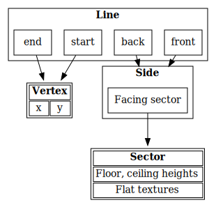
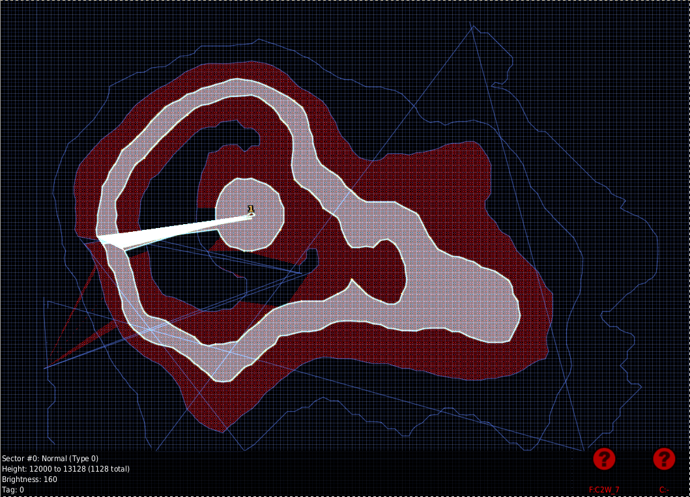
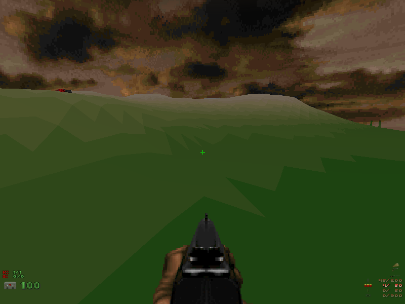

There are lots of options for when you want to visualise a function surface in R. Plain matrices can be drawn as false colour images using image; contours can be drawn around fixed levels (assuming a smooth function being tabulated) using contour or filled.contour; a three-dimensional surface can be drawn using persp. The lattice package provides the same for long-format data in functions contourplot, levelplot, and wireframe. Finally, the rgl package brings real interactive 3D plots to R.
Instead of using any of that, let's put the data one step closer to the user and make a Doom map out of it.
Prerequisites
In the original Doom 1 or 2, sloped floors just weren't possible at all, so we'll be using ZDoom. A related engine like Zandronum will also support enough of the feature we will be using.
At this point, it is important to note that a Doom map consists, among other things, of vertices, lines, sides, and sectors. The vertices are points on the surface (with x, y coordinates). Lines go from one point to the other and have one or two sides, with the "front" side being positioned clockwise from the line. Sides determine the wall textures (which we'll mostly ignore) and the facing sectors, which finally determine the floor & ceiling textures and heights:

My original plan was to start with contourLines and make LINEDEFS of type slope front floor to align their heights. Unfortunately, most of the resulting sectors were not completely closed, making the editor "fix" the situation by adding more lines to join the first and the last vertex of every sector:

It turned out to be easier to go with the universal Doom map format (also known as TEXTMAP), which can store heights for individual vertices, and what is a heightmap contained in a matrix (accompanied by an x and an y vector) if not an array of vertices arranged on a grid? One remaining detail is that the sectors surrounding the vertex with a specified height must be triangular. (It's possible to specify the height for any vertex, but the floor will remain flat if the sector is not triangular, or, say, consists of multiple triangles.)
Triangular sectors
Thankfully, splitting a rectangular grid into triangular sectors is no problem and only took me three or four tries. Every rectangle of the grid becomes two triangles:
Since the triangles, not the vertices determine the colour of the floor, we'll average the neighbouring points to get their values. From a matrix z of vertex heights, we're getting:
floors <- array( c( z[-1,-1] + z[-nrow(z),-ncol(z)] + z[-1,-ncol(z)], z[-1,-1] + z[-nrow(z),-ncol(z)] + z[-nrow(z),-1] ) / 3, c(dim(z)-1, 2) )
This is Doom, so instead of full-colour floors we are setting up a small, fixed number of textures, and using thresholds in the vector levels to determine the number of the corresponding texture:
texturenum <- array(findInterval(floors, levels), dim(floors))
We then have to arrange to number the individual sectors:
sidx <- texturenum sidx[] <- seq_len(length(sidx))
Now for the vertices. We must list every combination of the coordinates provided to us in a pair of vectors x, y corresponding to rows and columns of the matrix z:
vertices <- data.frame( x = x[row(z)], y = y[col(z)], z = as.vector(z) )
The choice of x corresponding to rows of z and y corresponding to columns of z may look counter-intuitive, but it matches what image() does with the coordinates.
Since the lines reference the vertices by their numbers, we need to set up a way (the vidx matrix) to map from row and column numbers to the individual rows of the vertices data frame:
vidx <- z vidx[] <- seq_len(length(z))
Now let's construct the lines.
linedefs <- rbind(
For a matrix with N rows (points in x) and M columns (points in y), we'll need (N-1)*M horizontal lines that would go from (i, j) to (i+1, j) for every applicable (i, j). Their front (clockwise) sector would be the triangle T(i,j-1,2) (except for the lowest horizontal, which doesn't have a front side), and their back (counter-clockwise) sector would be T(i,j,1) (except for the topmost horizontal).
data.frame( start = as.vector(vidx[-nrow(z),]), end = as.vector(vidx[-1,]), front = as.vector(cbind(NA, sidx[,,2])), back = as.vector(cbind(sidx[,,1], NA)) ),
In a similar manner, we get N*(M-1) verticals with fronts at T(i,j,2) and backs at T(i-1,j,1):
data.frame( start = as.vector(vidx[,-ncol(z)]), end = as.vector(vidx[,-1]), front = as.vector(rbind(sidx[,,2], NA)), back = as.vector(rbind(NA, sidx[,,1])) ),
Finally, we add the (N-1)*(M-1) diagonals with fronts and backs at T(i,j,1) and T(i,j,2), respectively:
data.frame( start = as.vector(vidx[-nrow(z),-ncol(z)]), end = as.vector(vidx[-1,-1]), front = as.vector(sidx[,,1]), back = as.vector(sidx[,,2]) ) )
Are we done? Almost.
For some reason, SLADE seems to ignore the lines with a back side but no front side, so we have to flip those lines around:
linedefs <- within(linedefs, { flip <- is.na(front) & !is.na(back) tmp <- start[flip] start[flip] <- end[flip] end[flip] <- tmp tmp <- front[flip] front[flip] <- back[flip] back[flip] <- tmp rm(tmp, flip) })
Finally, we can write the TEXTMAP chunk:
writeLines(c( 'namespace = "zdoom";', paste0( 'vertex\n', '{\n',
UDMF coordinates should be integer-valued. The original format used C variables of type short, which (as expected) corresponded to 16-bit two's complement signed integers.
'x = ',round(vertices$x),';\n', 'y = ',round(vertices$y),';\n',
128 units is just enough for a ceiling.
'zceiling = ',round(max(vertices$z)+128),';\n', 'zfloor = ',round(vertices$z),';\n', '}\n' ), paste0( 'linedef\n', '{\n',
Doom indexes everything from 0 unlike R, which is why we have to subtract 1 here.
'v1 = ',linedefs$start-1,';\n', 'v2 = ',linedefs$end-1,';\n', ifelse( is.na(linedefs$front), '', paste0('sidefront = ',linedefs$front-1,';\n') ), ifelse( is.na(linedefs$back), '', paste0('sideback = ',linedefs$back-1,';\n') ),
One-sided lines are supposed to happen on the boundaries of the map. special = 9 corresponds to Line_Horizon, replacing the wall texture with the floor texture stretching to infinity (and covered with the skybox):
ifelse( is.na(linedefs$front) | is.na(linedefs$back), 'blocking = true;\nspecial = 9;\n', 'twosided = true;\n' ), '}\n' ),
Every side in our map corresponds to an individual sector (which also helps us ignore wall textures).
paste0( 'sidedef\n', '{\n', 'sector = ',as.vector(sidx-1),';\n', '}\n' ),
Finally, from a character vector textures containing texture names (one more than the thresholds in levels) we construct the definitions of every sector referenced by the side definitions:
paste0( 'sector\n', '{\n', 'texturefloor = "',as.vector(textures[texturenum+1]),'";\n', 'textureceiling = "F_SKY1";\n', '}\n' ) ), 'TEXTMAP')
Does it work? Let's try with x <- seq_len(nrow(volcano)) * 32, y <- seq_len(ncol(volcano)) * 32, z <- volcano * 2 and textures <- sprintf('TER%02d', 1:16) corresponding to hcl.colors(16, 'Terrain2') (which we'll have to generate manually as an exercise for the reader). For levels, we'll use 15 points inside the range of z: seq(min(z), max(z), length.out = 17)[2:16].
After a few manual passes in SLADE (to add the player spawn point), it works:

Download the R script and try it yourself!